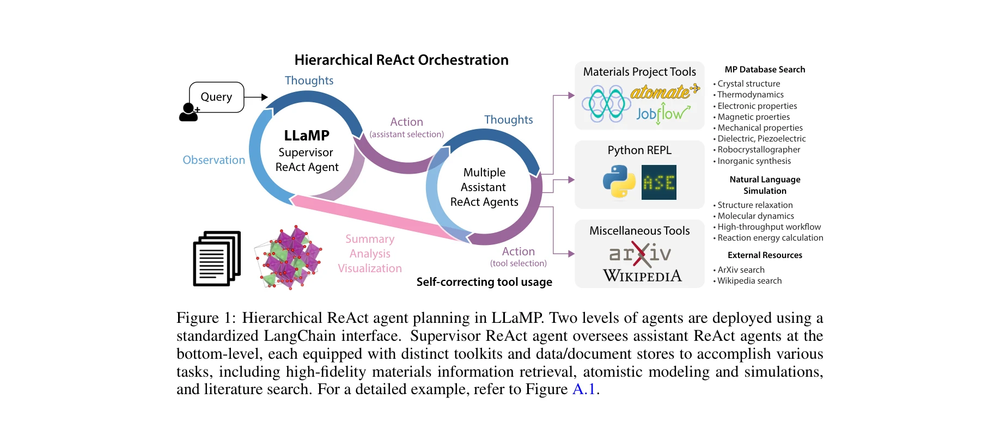
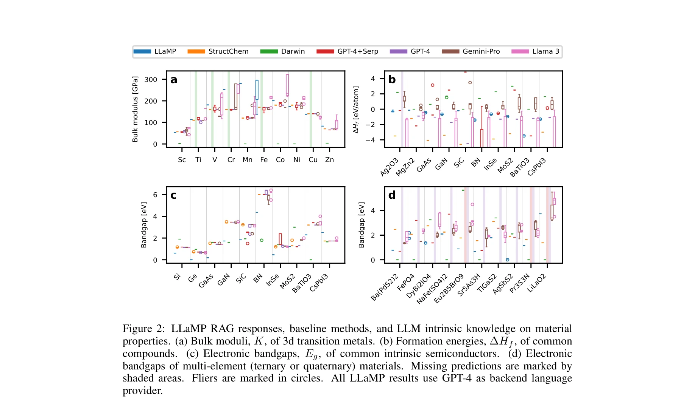

저자: Yuan Chiang, Elvis Hsieh, Chia-Hong Chou, Janosh Riebesell | 날짜: 2024-10-09 | DOI: 10.48550/arXiv.2401.17244

Figure 1: Hierarchical ReAct agent planning in LLaMP. Two levels of agents are deployed using a
LLaMP는 계층적 ReAct 에이전트 기반 multimodal RAG 프레임워크로, Materials Project와 atomistic simulation 도구를 활용하여 LLM의 hallucination을 줄이고 재료과학 분야에서 높은 신뢰도의 지식 검색과 복잡한 작업을 수행한다.

Figure 2: LLaMP RAG responses, baseline methods, and LLM intrinsic knowledge on material
Figure 1: Hierarchical ReAct agent planning in LLaMP. Two levels of agents are deployed using a
총평: LLaMP는 계층적 ReAct 에이전트와 domain-specific data source를 결합하여 과학 분야에서 LLM의 hallucination 문제를 실질적으로 완화하는 실용적이고 혁신적인 프레임워크를 제시하며, materials informatics에서의 구체적 성과로 scientific AI의 신뢰성 향상에 중요한 기여를 한다.